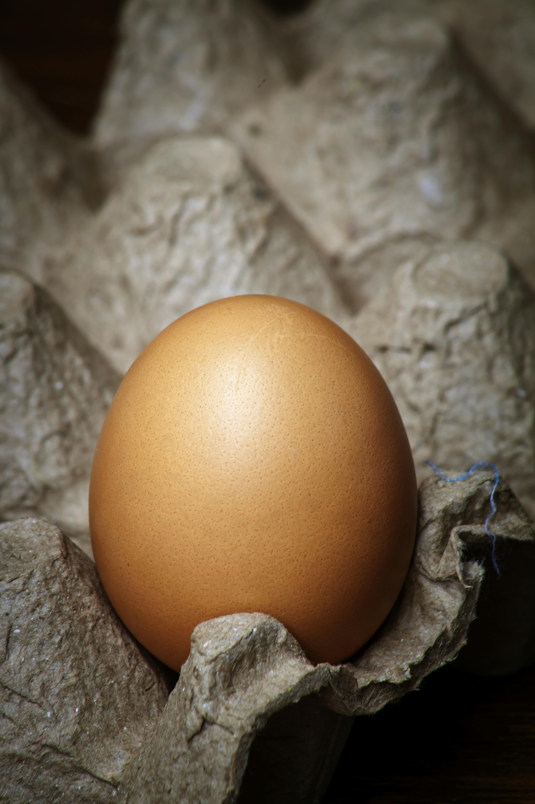
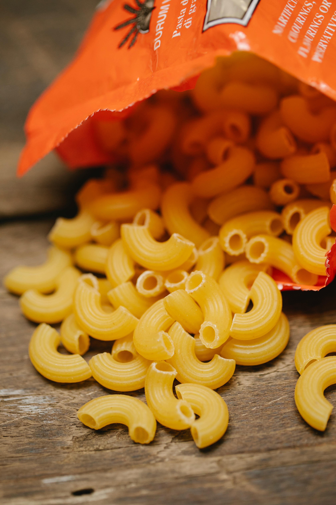
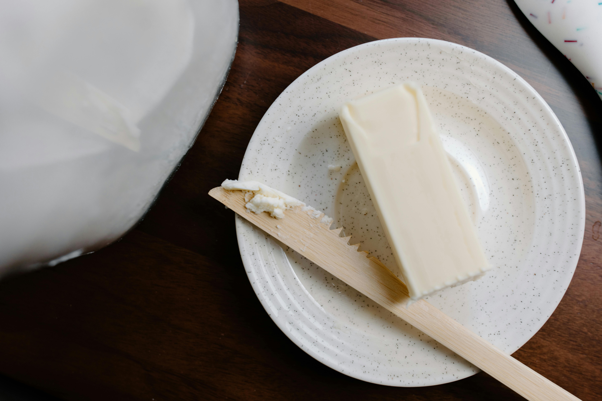

Baked Macaroni and Cheese

Description
This recipe is the key to a quick, delicious baked mac and cheese. This dish is perfect for experimenting with seasonings and cheese blends so you can make it tastes like Grandma's, although we know it may never be that good.
Quick Facts
- Prep Time: 10 mins
- Cook Time: 35-40 mins
- Total Time: 45-50 mins
- Servings: About 6
Ingredients
- 12 ounces elbow macaroni pasta
- 2 cups whole milk
- 1 large egg
- 2 1/2 cups shredded cheddar cheese
- 2 tablespoons butter (melted)
- Salt and pepper to taste



Steps
- Preheat the oven to 350 degrees F (175 degrees C). Set out a 2 quart baking dish, lightly grease.
- Boil macaroni until barely done, typically about 5 minutes. Drain and allow to cool a bit.
- Whisk egg and milk together in a large bowl;sir in butter and cheese.
- Place macaroni in the baking dish you prepared. Pour mixture over the macaroni, season with salt and pepper and stir until combined. Press mixture evenly into a baking dish.
- Bake uncovered in the oven until the top is golden brown, typically about 30-40 minutes.
- Serve hot and try not to eat it all!